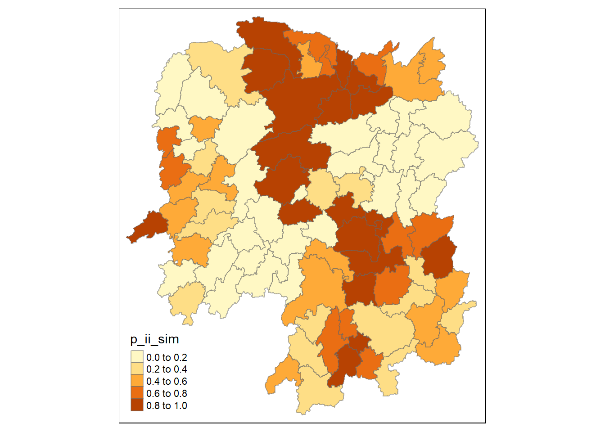
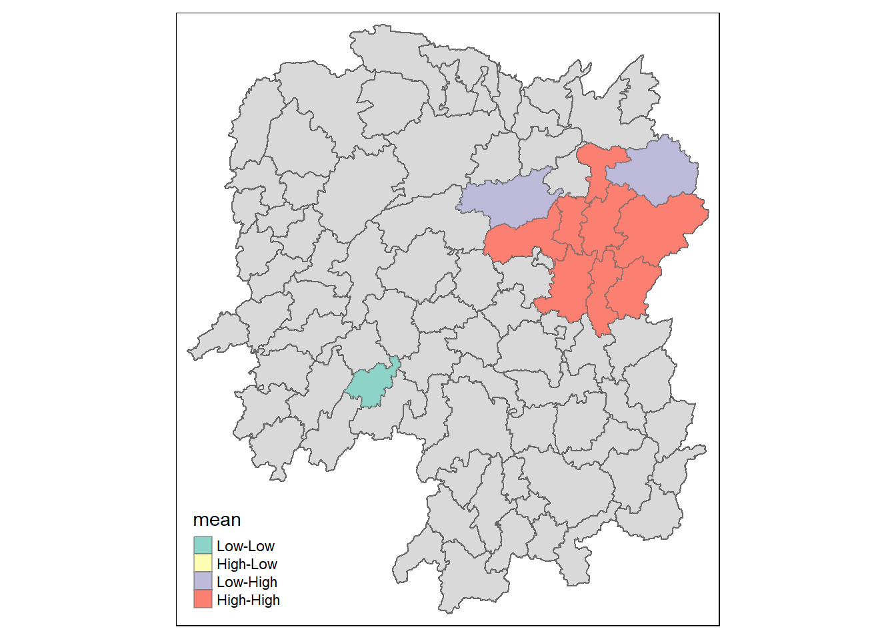
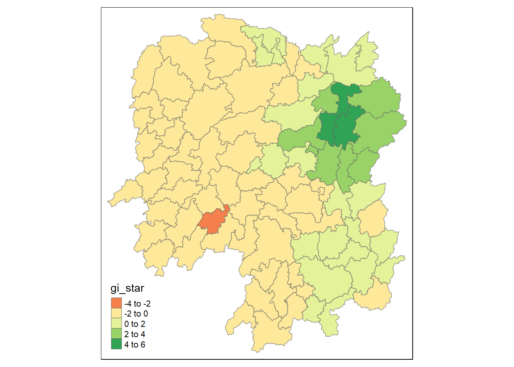

pacman::p_load(sf, sfdep, tmap, tidyverse, zoo)In Class Exercise 7: Global and Local Measures of Spatial Autocorrelation (sfdep Methods)
1 Notes
1.1 Spatial Autocorrelation
Describes the presence of systematic spatial variation in a variable.
- try to reject null hypothesis: phenomenon does not depend on space
Values:
close to 1: positive spatial autocorrelation
0: no correlation
close to -1: negative spatial autocorrelation
1.1.0.1 Positive Spatial Autocorrelation
- Clustering
- Neighbours are similar
- Compatible with diffusion
1.1.1 Spatial Dependency
Spatial relationship of variable values, existence of statistical dependence in a collection of random variables (each associated with a different geographical location)
1.1.2 Methods to Measure:
1.1.2.1 Moran’s I
Describes how features differ from the values in the study area as a whole (requires weight matrix).
Results (Z-value):
positive (>0): Clustered, observations tend to be similar
negative (<0): Dispersed, observations tend to be dissimilar
approx. 0: observations are arranged randomly over space
1.1.2.2 Geary’s c
Describes how features differ from their immediate neighbours
Results (Z-value):
Large c value (>1): dispersed, observations tend to be dissimilar
Small c value (<1): clustered, observations tend to be similar
=1: observations arranged randomly over space
1.1.2.3 Running Simulations
use two-tailed test
nsim = 99 (100 simulations)
confident interval: alpha = 0.05
1.1.2.4 Getis-Ord Global G (G statistics)
Computes overall concentrations/lack of concentration in all pairs that are neighbours given the definition of neighbouring areas
- differences (2): not finding differences but combined values, depends on distance weight instead of proximity weight
- only accepts positive values for variables
1.2 Local Spatial Autocorrelation Statistics
Decompose from global measures.
detect clusters/outliers
identify hot/cold spot areas
assess assumptions of stationary
identify distances beyond which no discernible association obtains(???)
1.2.1 LISA (Local Indicator of Spatial Autocorrelation)
Indication of extent of significant spatial clustering of similar values around the observation
sum of LISAs for all observations: proportional to global indicator of spatial association
local Moran’s I
detect clusters AND outliers
1.2.2 Intepretation of Local Moran and Scatterplot
Outlier: significant and negative if location is associated with relatively low values in surrounding locations
Cluster: significant and positive if location is associated with relatively high values of surrounding locations
- p-value for feature must be small enough for cluster/outlier to be considered statistically significant
- Positive Autocorrelation (Cluster):
High-high: is high and neighbours are high
Low-low: is low and neighbours are low
- Negative Autocorrelation (Outlier):
Low-high: is low outlier among high neighbours
High-low: is high outlier among low neighbours
1.2.3 Hot and Cold Spot Areas
Decompose local G-stats, based on distance. Only detects clusters, but differentiate high-high (hot) or low-low clusters (cold).
Use Getis-Ord Gi and Gi
2 calibrations: one takes into consideration of it’s distance (??)
hot spot area: significant and positive, location is associated with relatively high values of the surrounding locations
cold spot area: significant and negative, location is associated with relatively low values in surrounding locations
1.2.4 Emerging Hot Spot Analysis (EHSA)
For time series. because data can evolve overtime.
2 In-Class Exercise
2.1 Setting Up
2.1.1 Installing and Loading Packages
2.1.2 Importing Data
2.1.2.1 Geospatial Data: Hunan
hunan <- st_read(
dsn = "data/geospatial",
layer = "Hunan"
)Reading layer `Hunan' from data source
`D:\bellekwang\IS415\inclass_ex\ICE7\data\geospatial' using driver `ESRI Shapefile'
Simple feature collection with 88 features and 7 fields
Geometry type: POLYGON
Dimension: XY
Bounding box: xmin: 108.7831 ymin: 24.6342 xmax: 114.2544 ymax: 30.12812
Geodetic CRS: WGS 842.1.2.2 Aspatial Data: Hunan 2012
hunan2012 <- read.csv("data/aspatial/Hunan_2012.csv")2.1.2.3 Combining Datasets
hunan <- left_join(hunan, hunan2012) %>%
select(1:4, 7, 15)2.2 Global & Local Measure of Spatial Autocorrelation
2.2.1 Computing Contiguity Weights (Queen’s Method)
wm_q <- hunan %>%
mutate(
nb = st_contiguity(geometry),
wt = st_weights(nb, style = "W"),
.before = 1
)nb: neighbour list
wt: weight matrix, “W”: row standardised
2.2.2 Global Moran’s I
(Optional) Computing Moran’s I with global_moran(variable, nb, wt):
moranI <- global_moran(
wm_q$GDPPC, wm_q$nb, wm_q$wt
)moranI: list of 2 values
I: 0.301
K: 7.64
Performing Global Moran’s I test with global_moran_test(variable, nb, wt):
global_moran_test(
wm_q$GDPPC, wm_q$nb, wm_q$wt
)
Moran I test under randomisation
data: x
weights: listw
Moran I statistic standard deviate = 4.7351, p-value = 1.095e-06
alternative hypothesis: greater
sample estimates:
Moran I statistic Expectation Variance
0.300749970 -0.011494253 0.004348351 p-value: whether it is significant enough to reject null value
- 1.095e-06 << 0.05 (alpha-value): have enough statistical evidence to reject the null hypothesis
alternative hypothesis: greater because I statistics/Variance(??) is positive.
2.2.2.1 Permutation Test (Simulation)
set.seed(1234)- ensure simulation results are reproducible, globally
global_moran_perm(
wm_q$GDPPC, wm_q$nb, wm_q$wt, nsim = 99
)
Monte-Carlo simulation of Moran I
data: x
weights: listw
number of simulations + 1: 100
statistic = 0.30075, observed rank = 100, p-value < 2.2e-16
alternative hypothesis: two.sided- p-value < 0.05: significant enough to reject null hypothesis
2.2.3 Local Moran’s I
lisa <- wm_q %>%
mutate(
local_moran = local_moran(
GDPPC, nb, wt, nsim = 99
),
.before = 1
) %>%
unnest(local_moran)
lisaSimple feature collection with 88 features and 20 fields
Geometry type: POLYGON
Dimension: XY
Bounding box: xmin: 108.7831 ymin: 24.6342 xmax: 114.2544 ymax: 30.12812
Geodetic CRS: WGS 84
# A tibble: 88 × 21
ii eii var_ii z_ii p_ii p_ii_…¹ p_fol…² skewn…³ kurtosis
<dbl> <dbl> <dbl> <dbl> <dbl> <dbl> <dbl> <dbl> <dbl>
1 -0.00147 0.00177 4.18e-4 -0.158 0.874 0.82 0.41 -0.812 0.652
2 0.0259 0.00641 1.05e-2 0.190 0.849 0.96 0.48 -1.09 1.89
3 -0.0120 -0.0374 1.02e-1 0.0796 0.937 0.76 0.38 0.824 0.0461
4 0.00102 -0.0000349 4.37e-6 0.506 0.613 0.64 0.32 1.04 1.61
5 0.0148 -0.00340 1.65e-3 0.449 0.654 0.5 0.25 1.64 3.96
6 -0.0388 -0.00339 5.45e-3 -0.480 0.631 0.82 0.41 0.614 -0.264
7 3.37 -0.198 1.41e+0 3.00 0.00266 0.08 0.04 1.46 2.74
8 1.56 -0.265 8.04e-1 2.04 0.0417 0.08 0.04 0.459 -0.519
9 4.42 0.0450 1.79e+0 3.27 0.00108 0.02 0.01 0.746 -0.00582
10 -0.399 -0.0505 8.59e-2 -1.19 0.234 0.28 0.14 -0.685 0.134
# … with 78 more rows, 12 more variables: mean <fct>, median <fct>,
# pysal <fct>, nb <nb>, wt <list>, NAME_2 <chr>, ID_3 <int>, NAME_3 <chr>,
# ENGTYPE_3 <chr>, County <chr>, GDPPC <int>, geometry <POLYGON [°]>, and
# abbreviated variable names ¹p_ii_sim, ²p_folded_sim, ³skewnessunnest(): convert list to value for future plottingoutput: lisa table with new variables (Ii: Moran stats., z_ii: standardised, p_ii: p-value)
mean, median and pysal: 4 quadrants labelled
- mean and pysal usually the same, usually use mean
2.2.4 Plotting Local Moran I
tmap_mode("plot")
tm_shape(lisa) +
tm_fill("ii") +
tm_borders(alpha = 0.5)
2.2.4.1 p-value (p_ii)
* Better to plot simulated results (e.g. p_ii_sim) > p_ii (raw value): ensure results are more stable
tmap_mode("plot")
tm_shape(lisa) +
tm_fill("p_ii_sim") +
tm_borders(alpha = 0.5)
2.2.4.2 Combining the 2 plots
lisa_sig <- lisa %>%
filter(p_ii < 0.05)
tmap_mode("plot")
tm_shape(lisa) +
tm_polygons() +
tm_borders(alpha = 0.5) +
tm_shape(lisa_sig) +
tm_fill("mean") +
tm_borders(alpha = 0.5)
*Should have one more category called not significant. (follow hands on exercise example!!)*
2.2.5 Hot and Cold Spot Area Analysis
Generally use G* local_gstar_perm():
HCSA <- wm_q %>%
mutate(
local_Gi = local_gstar_perm(
GDPPC, nb, wt, nsim = 99
),
.before = 1
) %>%
unnest(local_Gi)
HCSASimple feature collection with 88 features and 16 fields
Geometry type: POLYGON
Dimension: XY
Bounding box: xmin: 108.7831 ymin: 24.6342 xmax: 114.2544 ymax: 30.12812
Geodetic CRS: WGS 84
# A tibble: 88 × 17
gi_star e_gi var_gi p_value p_sim p_fol…¹ skewn…² kurto…³ nb wt
<dbl> <dbl> <dbl> <dbl> <dbl> <dbl> <dbl> <dbl> <nb> <lis>
1 -0.00567 0.0115 0.00000812 9.95e-1 0.82 0.41 1.03 1.23 <int> <dbl>
2 -0.235 0.0110 0.00000581 8.14e-1 1 0.5 0.912 1.05 <int> <dbl>
3 0.298 0.0114 0.00000776 7.65e-1 0.7 0.35 0.455 -0.732 <int> <dbl>
4 0.145 0.0121 0.0000111 8.84e-1 0.64 0.32 0.900 0.726 <int> <dbl>
5 0.356 0.0113 0.0000119 7.21e-1 0.64 0.32 1.08 1.31 <int> <dbl>
6 -0.480 0.0116 0.00000706 6.31e-1 0.82 0.41 0.364 -0.676 <int> <dbl>
7 3.66 0.0116 0.00000825 2.47e-4 0.02 0.01 0.909 0.664 <int> <dbl>
8 2.14 0.0116 0.00000714 3.26e-2 0.16 0.08 1.13 1.48 <int> <dbl>
9 4.55 0.0113 0.00000656 5.28e-6 0.02 0.01 1.36 4.14 <int> <dbl>
10 1.61 0.0109 0.00000341 1.08e-1 0.18 0.09 0.269 -0.396 <int> <dbl>
# … with 78 more rows, 7 more variables: NAME_2 <chr>, ID_3 <int>,
# NAME_3 <chr>, ENGTYPE_3 <chr>, County <chr>, GDPPC <int>,
# geometry <POLYGON [°]>, and abbreviated variable names ¹p_folded_sim,
# ²skewness, ³kurtosis2.2.5.1 Plot
tmap_mode("plot")
tm_shape(HCSA) +
tm_fill("gi_star") +
tm_borders(alpha = 0.5) +
tm_view(set.zoom.limits = c(6,8))
tmap_mode("plot")
tm_shape(HCSA) +
tm_fill("p_sim") +
tm_borders(alpha = 0.5)
interested in values smaller than 0.05, majority are more than 0.05
- should change the categories to sth smaller!!
3 EHCA
3.1 Create a Space Time Cube
GDPPC <- read.csv("data/aspatial/Hunan_GDPPC.csv")GDPPC_st <- spacetime(
GDPPC, hunan,
.loc_col = "County",
.time_col = "Year"
)- spatial and aspatial data are nested
3.2 Spatial Autocorrelation
3.2.1 Computing nb and wt
GDPPC_nb <- GDPPC_st %>%
activate("geometry") %>%
mutate(
nb = include_self(st_contiguity(geometry)),
wt = st_weights(nb)
) %>%
set_nbs("nb") %>%
set_wts("wt")3.2.2 Computing G*
#gi_stars <- GDPPC_nb %>%
#group_by(Year) %>%
#mutate(gi_star = local_gstar_perm(
#GDPPC, nb, wt, nsim = 99
#)) %>%
#unnest(gi_star)
#gi_stars3.2.3 Mann-Kendall Test
#cbg <- gi_stars %>%
#ungroup() %>%
#filter(County == "Changsa") %>%